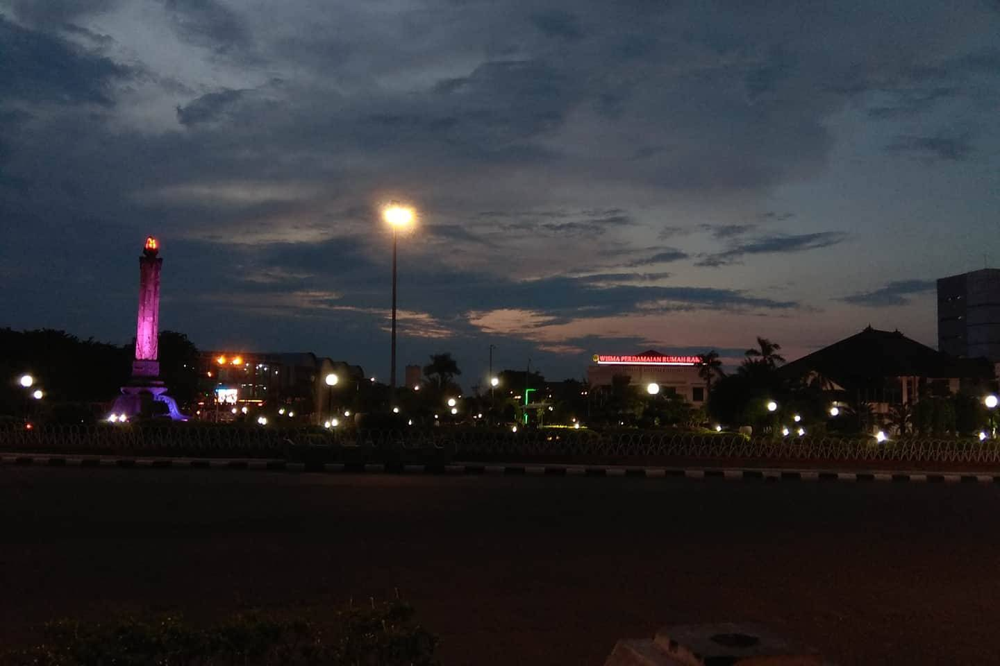

Candi Prambanan
Candi Borobudur

Pecian atau Kampung Cina adalah sebuah wilayah kota di luar daerah Tiongkok yang mayoritas penghuninya adalah etnis Tiongho. Pecian banyak terdapat di koto-kot besar di berbagai negara dmana orang Tiongkok merantau dan kemudian menetap seperti di Amerika Serikat, IIngrris dan negara-negara di Asia Tenggara
Candi Prambanan adalah kompleks candi Hindu terbesar di Indonesia yang dibangun pada abad ke-9 Masehi. Candi yang juga disebut sebagai Rara Jonggrang ini dipersembahkan untuk Trimurti, tiga dewa utama Hindu. Berdasarkan prasasti Siwagrha nama asli kompleks candi ini adalah Siwagrha dan memang di garbagriha (ruang utama) candi ini bersemayam arca Siwa Mahadewa setinggi tiga meter, dikarenakan aliran Syaiwa yang mengutamakan pemujaan dewa Siwa di candi ini.
Candi Borobudur adalah sebuah candi Buddha yang terletak di Borobudur, Magelang, Jawa Tengah, Indonesia. Candi ini terletak kurang lebih 100 km di sebelah barat daya Semarang, 86 km di sebelah barat Surakarta, dan 40 km di sebelah barah laut Yogyakarta. Candi dengan banyak stupa ini didirikan oleh para penganut agama Buddha Mahayana sekitar tahun 800-an Masehi pada masa pemerintahan wangsa Syailendra. Borobudur adalah candi atau kuil Buddha terbesar di dunia sekaligus salah satu monumen Buddha terbesar di dunia